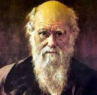

INTRODUCCIÓN A LOS PROCESOS EVOLUTIVOS

La evolución biológica es el proceso de transformación de unas especies en otras descendientes, incluyendo la extinción de la gran mayoría de las especies que han existido. Fue señalado por primera vez como un hecho empírico por Jean-Baptiste Lamarck. Generalmente se denomina evolución a cualquier proceso de cambio en el tiempo. En el contexto de las ciencias de la vida, la evolución es un cambio en el perfil genético de una población de individuos, que puede llevar a la aparición de nuevas especies, a la adaptación a distintos ambientes o a la aparición de novedades evolutivas.
A menudo existe cierta confusión entre hecho evolutivo y teoría de la evolución. Se denomina hecho evolutivo al hecho científico de que los seres vivos están emparentados entre sí y han ido transformándose a lo largo del tiempo. La teoría de la evolución es el modelo científico que describe la transformación y diversificación evolutivas y explica sus causas.
En los inicios del estudio de la evolución biológica, Charles Darwin y Alfred Russel Wallace propusieron la selección natural como principal mecanismo de la evolución. Actualmente, la teoría de la evolución combina las propuestas de Darwin y Wallace con las leyes de Mendel y otros avances genéticos posteriores; por eso es llamada síntesis moderna o teoría sintética. En el seno de esta teoría, la evolución se define como un cambio en la frecuencia de los alelos en una población a lo largo de las generaciones. Este cambio puede ser causado por una cantidad de mecanismos diferentes: selección natural, deriva genética, mutación, migración (flujo genético). La teoría sintética recibe una aceptación general en la comunidad científica, aunque también ciertas críticas. Ha sido enriquecida desde su formulación, en torno a 1940, por avances en otras disciplinas relacionadas, como la biología molecular, la genética del desarrollo o la paleontología.
La antigua teoría del lamarckismo, la suposición de que el fenotipo de un organismo puede dirigir de alguna forma el cambio del genotipo en sus descendientes, es una posición teórica actualmente indefendible, en la medida en que es positivamente incompatible con lo que sabemos sobre la herencia, y también porque todos los intentos por hallar pruebas de observación o experimentales, han fracasado. Es decir, según Lamarck , cuando un padre pasaba toda su vida realizando trabajos de fuerza (por ejemplo, si era leñador), transmitía la fuerza adquirida durante sus años de ejercicio a sus hijos, por vía genética y éstos nacían ya fuertes sin que necesitaran ejercicio. Mantuvo esa opinión incluso cuando en una conferencia se le preguntó que, si los hijos heredan genéticamente las caracteristicas que sus padres potenciaban a lo largo de su vida, cómo era posible que aún nacieran mujeres con himen.
Referente al creacionismo, la posición de que en un grado u otro, los seres vivos tienen un autor personal consciente (léase Dios), es una posición religiosa o filosófica que no puede probarse científicamente, y por tanto no es considerada por la comunidad científica como una teoría científica. No obstante, en el marco de la cultura popular protestante y anglosajona, algunos se esfuerzan por presentarlo como tal a través del Diseño inteligente; pero el consenso científico es considerar tales intentos solo como una forma de propaganda religiosa.
Teoría científica
La evolución biológica es un fenómeno natural real, observable y comprobable empíricamente. La llamada síntesis evolutiva moderna es una robusta teoría que actualmente proporciona explicaciones y modelos matemáticos sobre los mecanismos generales de la evolución o los fenómenos evolutivos, como la adaptación o la especiación. Como cualquier teoría científica, sus hipótesis están sujetas a constante crítica y comprobación experimental.
Theodosius Dobzhansky, uno de los fundadores de la síntesis moderna, definió la evolución del siguiente modo: "La evolución es un cambio en la composición genética de las poblaciones. El estudio de los mecanismos evolutivos corresponde a la genética poblacional."
Origen y desarrollo temprano de la vida.
El origen de la vida
.jpg)
El origen de la vida, aunque atañe al estudio de los seres vivos, es un tema que realmente no es explicado en la teoría de la síntesis moderna de la evolución; pues ésta última sólo se ocupa del cambio en los seres vivos, y no del origen, cambios (evolución a moléculas más complejas) e interacciones de las moléculas orgánicas de las que procede.
No se sabe mucho sobre las etapas más tempranas y previas al desarrollo de la vida, y los intentos realizados para tratar de desvelar la historia más temprana del origen de la vida, generalmente se enfocan en el comportamiento de las macromoléculas, particularmente el ARN, y el comportamiento de sistemas complejos.
Sin embargo, sí se está de acuerdo que todos los organismos existentes comparten ciertas características, incluyendo la estructura celular y el código genético; los que estarían relacionados con el origen de la vida. (Para los científicos que consideran a los virus como seres vivos, si bien los mismos no tienen una estructura celular, evolucionaron a partir de organismos que sí las poseían, probablemente comportándose originalmente como transposones).
Historia del pensamiento evolucionista
La idea de una evolución biológica ha existido desde épocas remotas, notablemente entre los helénicos como Epicuro, pero la teoría moderna no se estableció hasta llegados los siglos XVIII y XIX, con la contribución de científicos como Christian Pander, Jean-Baptiste Lamarck y Charles Darwin. En el siglo XVIII la oposición entre fijismo y transformismo es ambigua. Algunos autores, por ejemplo, admiten la transformación de las especies limitada a los géneros, pero niegan la posibilidad de pasar de un género a otro. Otros naturalistas hablan de "progresión" en la naturaleza orgánica, pero es muy difícil determinar si con ello hacen referencia a una transformación real de las especies o se trata, simplemente, de una modulación de la clásica idea de la scala naturae. Lamarck es el primero en formular explícitamente una teoría de la evolución, pero no fue sino hasta la publicación de El origen de las especies de Charles Darwin cuando el hecho de la evolución comenzó a ser ampliamente aceptado. Una carta de Alfred Russel Wallace, en la cual revelaba su propio descubrimiento de la selección natural, impulsó a Darwin a publicar su trabajo en evolución. Por lo tanto, a veces se comparte el crédito con Wallace por la teoría de la evolución (a veces llamada también teoría de Darwin-Wallace).
A pesar de que la teoría de Darwin pudo sacudir profundamente la opinión científica con respecto al desarrollo de la vida (e incluso resultando en una pequeña revolución social), no pudo explicar la fuente de variación existente entre las especies, y además la propuesta de Darwin de la existencia de un mecanismo hereditario (pangénesis) no satisfizo a la mayoría de los biólogos. No fue recién hasta fines del siglo XIX y comienzos del XX, que estos mecanismos pudieron establecerse.
Cuando se "redescubrió" alrededor del 1900 el trabajo de Gregor Mendel sobre la naturaleza de la herencia que databa de fines del siglo XIX, se estableció una discusión entre los Mendelianos (Charles Benedict Davenport) y los biométricos (Walter Frank Raphael Weldon y Karl Pearson), quienes insistían en que la mayoría de los caminos importantes para la evolución debían mostrar una variación continua que no era explicable a través del análisis mendeliano. Finalmente, los dos modelos fueron conciliados y fusionados, principalmente a través del trabajo del biólogo y estadístico R.A. Fisher. Este enfoque combinado, que empleaba un modelo estadístico riguroso a las teorías de Mendel de la herencia vía genes, se dio a conocer en los años 1930 y 1940 y se conoce como la teoría sintética de la evolución. En los años de la década de 1940, siguiendo el experimento de Griffith, Avery, McCleod y McCarty lograron identificar de forma definitiva al ácido desoxirribonucléico (ADN) como el "principio transformante" responsable de la transmisión de la información genética. En 1953, Francis Crick y James Watson publicaron su famoso trabajo sobre la estructura del ADN, basado en la investigación de Rosalind Franklin y Maurice Wilkins. Estos desarrollos iniciaron la era de la biología molecular y transformaron el entendimiento de la evolución en un proceso molecular: la mutación de segmentos de ADN (ver evolución molecular).
A mediados de la década de 1970, Motoo Kimura formuló la teoría neutralista de la evolución molecular, estableciendo de manera firme la importancia de la deriva génica como el mayor mecanismo de la evolución. Hasta la fecha continúan los debates en esta área de investigación. Uno de los debates más importantes es sobre la teoría del equilibrio puntuado, una teoría propuesta por Niles Eldredge y Stephen Jay Gould para explicar la escasez de formas transicionales entre especies.
Microevolución y macroevolución
Microevolución es un término usado para referirse a cambios de las frecuencias génicas en pequeña escala, en una población durante el transcurso de varias generaciones. Estos cambios pueden deberse a un cierto número de procesos: mutación, flujo génico, deriva génica, así como también por selección natural. La genética de poblaciones es la rama de la biología que provee la estructura matemática para el estudio de los procesos de la microevolución, como el color de la piel en la población mundial.
Los cambios a mayor escala, desde la especiación (aparición de una nueva especie) hasta las grandes transformaciones evolutivas ocurridas en largos períodos de tiempo, son comúnmente denominados macroevolución (por ejemplo, los anfibios que evolucionaron a partir de un grupo de peces óseos). Los biólogos no acostumbran hacer una separación absoluta entre macroevolución y microevolución, pues consideran que macroevolución es simplemente microevolución acumulada y sometida a un rango mayor de circunstancias ambientales. Una minoría de teóricos, sin embargo, considera que los mecanismos de la teoría sintética para la microevolución no bastan para hacer esa extrapolación y que se necesitan otros mecanismos. La teoría de los equilibrios puntuados, propuesta por Gould y Eldredge, intenta explicar ciertas tendencias macroevolutivas que se observan en el registro fósil.
Evolución y sistemas éticos y sociales
La teoría de la evolución por acción de la selección natural también ha sido adoptada como fundamento para varios sistemas éticos y sociales, como el Darwinismo social, el cual mantiene que la supervivencia del más apto explica y justifica las diferencias de bienestar y éxito entre las sociedades, las personas y la eugenesia, que claman que la civilización humana estaba revirtiendo la selección natural permitiendo que los menos aptos sobrevivieran y se procrearan en exceso con respecto a los más aptos. Después de que las atrocidades del Holocausto fueran vinculadas con la eugenesia, la opinión pública científica dejó de ver de manera favorable la relación entre la selección natural y el Darwinismo social y la eugenesia (a pesar de que tampoco había sido realmente aceptada universalmente en el pasado).
Algunos creacionistas, como Kent Hovind, creen que la evolución es la base para el Nazismo, Comunismo, Marxismo, la alabanza a la Madre Tierra, racismo, etc.
La deformación del concepto evolutivo biológico, adaptado a tesis sociales y económicas ha sido usado como excusa para promover y defender la rivalidad y competitividad en muchos casos despiadada entre personas, empresas y naciones e incluso ha llegado ser empleado para justificar venganzas, por el mal extrapolado "principio de supervivencia del más apto". La noción de que los humanos comparten ancestros comunes con otros animales, también afectó la manera en la que algunas personas ven la relación entre los humanos y otras especies. Muchos de los defensores de los derechos humanos mantienen que si los animales y humanos son de la misma naturaleza, por lo que entonces los derechos no pueden ser distintos para los humanos.